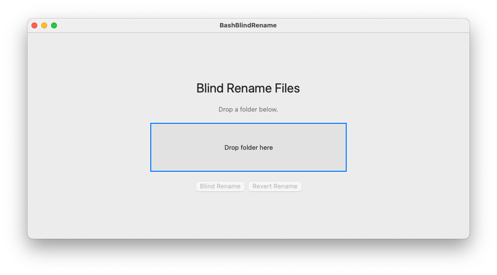

Blind Rename Files¶
Obfuscate filenames for unbiased analysis: macOS App & Bash Scripts


A macOS app and Bash scripts to blind-rename files in a folder for unbiased analysis. Original filenames are saved in a dictionary so they can be restored at any time.
What it does¶
Each file in a folder is renamed to a 20-character uppercase hash derived from its original filename. A name_dictionary.csv mapping is saved alongside the files. Running the revert restores all original names and archives the dictionary.
Files created in the folder:
| File | Purpose |
|---|---|
name_dictionary.csv |
Maps original names to obfuscated names |
Analysis_file.csv |
List of obfuscated names only, for use during blind analysis |
name_dictionary_DEPRECATED.csv |
Renamed from dictionary after a successful revert |
Subfolders are never touched.
How it works¶
flowchart TD
A[Select folder] --> B{Run as root?}
B -- yes --> X[Abort]
B -- no --> C{name_dictionary.csv or<br/>Analysis_file.csv exists?}
C -- yes --> X1[Abort: already renamed]
C -- no --> D{name_dictionary_DEPRECATED.csv<br/>exists?}
D -- yes --> X2[Abort: already randomized once<br/>delete DEPRECATED file]
D -- no --> E{200 or more files?}
E -- "yes, user answers N" --> X3[Exit, no changes]
E -- "no, or user answers Y" --> F[Next file in folder<br/>top level only, subfolders skipped]
F --> G{name_dictionary.csv, Analysis_file.csv,<br/>.DS_Store or Thumbs.db?}
G -- yes --> F
G -- no --> H[SHA hash of filename<br/>uppercase, first 20 alphanumeric chars]
H --> I[Keep original extension]
I --> J[Rename file]
J --> K[Append Old,New to name_dictionary.csv<br/>append New to Analysis_file.csv]
K -- more files --> F
K -- all files done --> L[Blind analysis using Analysis_file.csv]
L --> M[Revert: read name_dictionary.csv]
M --> N[Restore original names]
N --> O[Rename dictionary to<br/>name_dictionary_DEPRECATED.csv]macOS App¶

Download BashBlindRename.app from the releases page.
Note
Requires macOS 12 or later. No installation: double-click and run.
- Open the app.
- Drag and drop your folder onto the drop zone.
- Click Blind Rename to obfuscate filenames.
- Click Revert Rename to restore original names.
Bash Scripts¶
Requirements¶
- Bash (macOS or Linux)
shasum, pre-installed on macOS and most Linux systems
Setup¶
Blind rename a folder¶
Revert to original names¶
Example¶
Starting folder:
After ./bash_blind_rename.sh temp/:
temp/
007937B3F4F4D9F58B7D.txt
3C27A89C60DE090DE1F6.txt
760A83AE04023DD099FC.txt
name_dictionary.csv
Analysis_file.csv
subfolder/
bar_1.txt
subfolder/ and its contents are untouched.
name_dictionary.csv:
Oldname,Newname
foo_1.txt,007937B3F4F4D9F58B7D.txt
foo_2.txt,3C27A89C60DE090DE1F6.txt
foo_3.txt,760A83AE04023DD099FC.txt
After ./revert_rename.sh temp/:
Safety rules¶
Warning
- Will not run if
name_dictionary.csvorAnalysis_file.csvalready exist in the folder. - Will not run if
name_dictionary_DEPRECATED.csvexists. Delete it first to re-run. - Does not run as root/superuser.
- Does not recurse into subfolders.
License¶
See LICENSE.